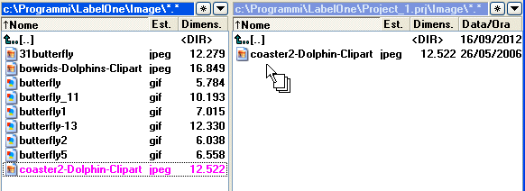
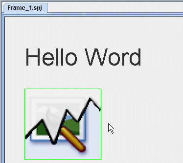
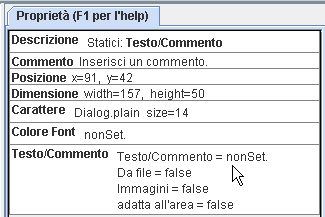
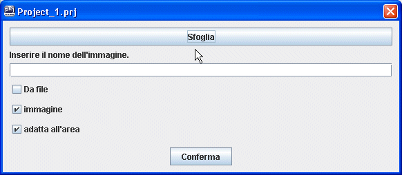
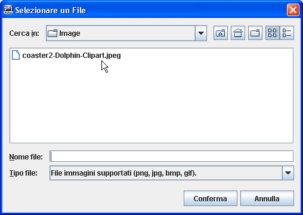
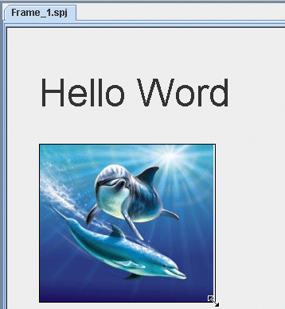

ImmagineServe per inserire in un frame un-immagine fissa. Prima di inserire un'immagine andiamo a metterla nella cartella del progetto. Questo risulta fondamentale per tenere tutto quello che occorre al progetto in una sola cartella che potrà essere spostata su un altro PC senza perdere i collegamenti con i file. Nel nostro caso andiamo a prendere l'immagine "coaster2-Doelphin-Clipart.jpj" che si trova nella cartella Image all'esterno della cartella del progetto. La cartella del progetto si chiama con il nome del progetto, nel nostro caso Project_1.prj.  Selezionare Immagine nel pannello
Componenti fra gli oggetti Statici
|
Dopo aver cliccato su Immagine spostare il mouse (non trascinare) fino a posizionarsi nel punto giusto del frame. Poi cliccare in quel punto.  Ora dobbiamo indicare nelle proprità dell'oggetto il percorso dell'immagine. |
Proprietà ImmagineAttraverso le proprietà di un oggetto è possibile configurarlo per adattarlo alle nostre esigenze. L'immgine da visualizzare nel frame va inserita in Testo/Commento. In questo caso c'è scritto nonSet, per affermare che il percorso non è ancora stato inserito. Per farlo clicchiamo dove indica il puntatore del mouse nell'mmagine di seguito.  |
| Si aprirà una finestra che consentirà
di inserire il percorso.  |
Premiamo su Sfoglia per cercare l'immagine che per default verrà cercata nella cartella image del progetto. nel nostro caso nella cartella image di Project_1.prj  |
Fra le opzioni disponibili c'è adatta all'area. Questo è molto comodo per inserire delle immagini senza preoccuparsi troppo della loro dimensione. E' chiaro che la dimensione in termini di byte rallenta l'avvio del programma a causa del tempo necessario al caricamento e all'interpretazione dell'immagine.  Ora possimo dimensionare limmagine usando il mouse. |